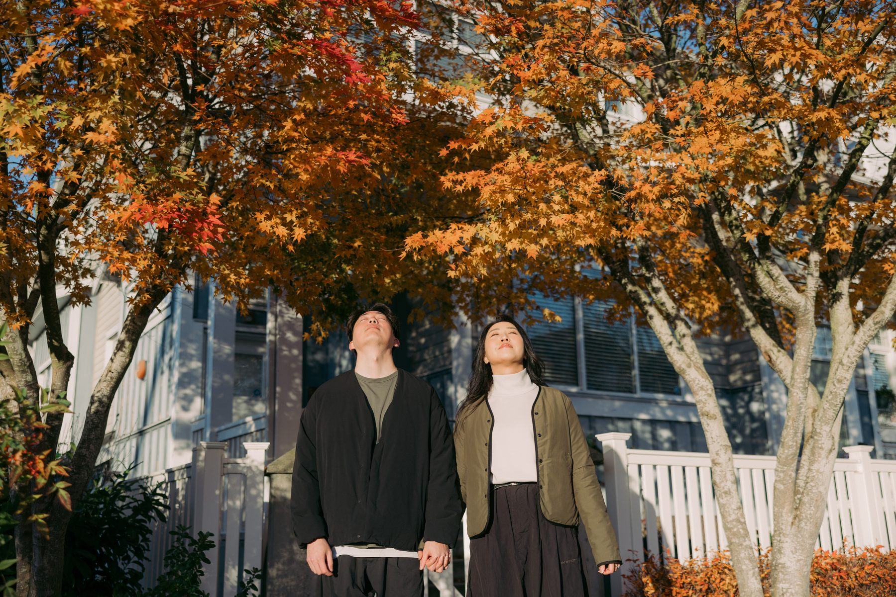
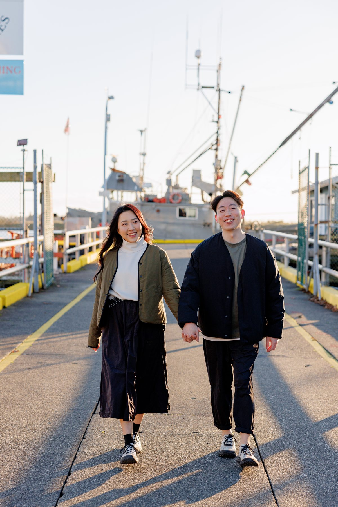
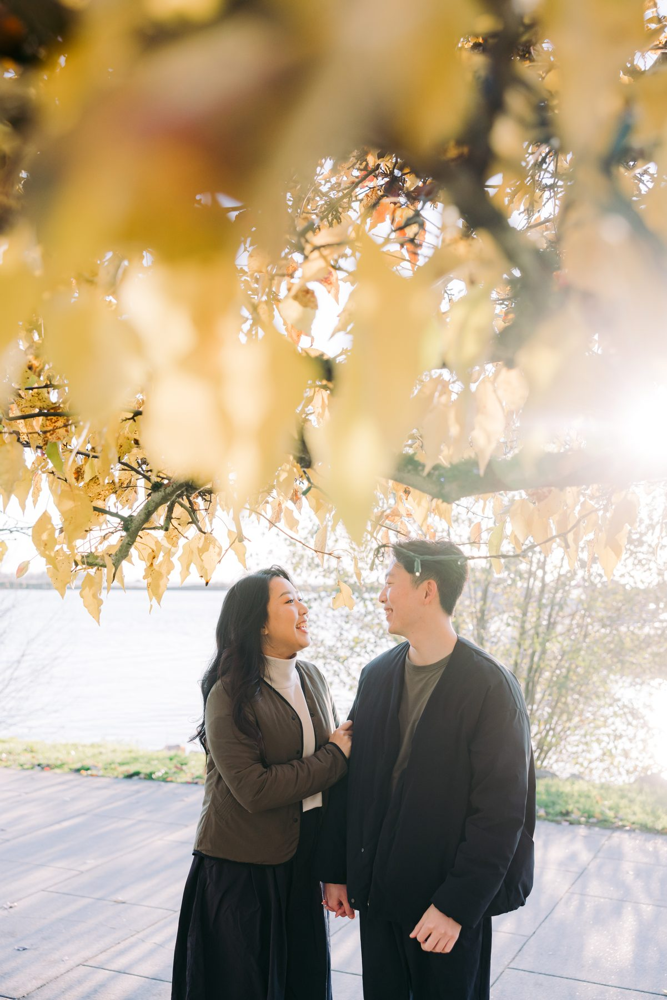
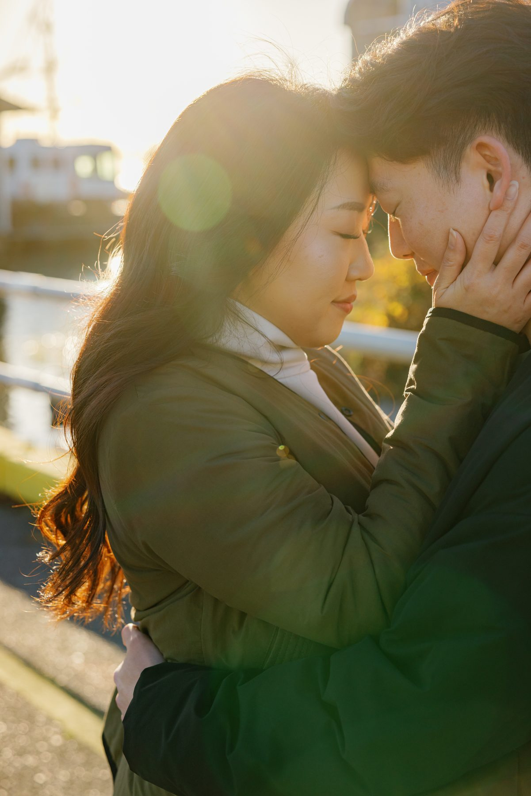
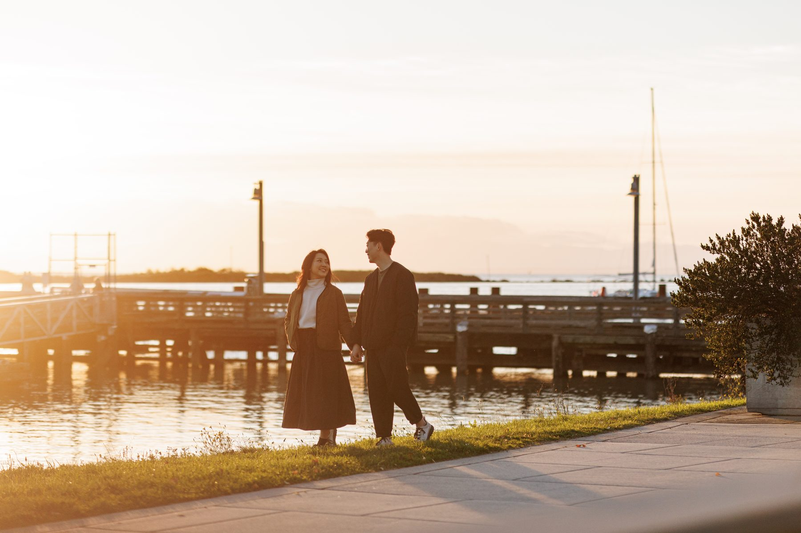
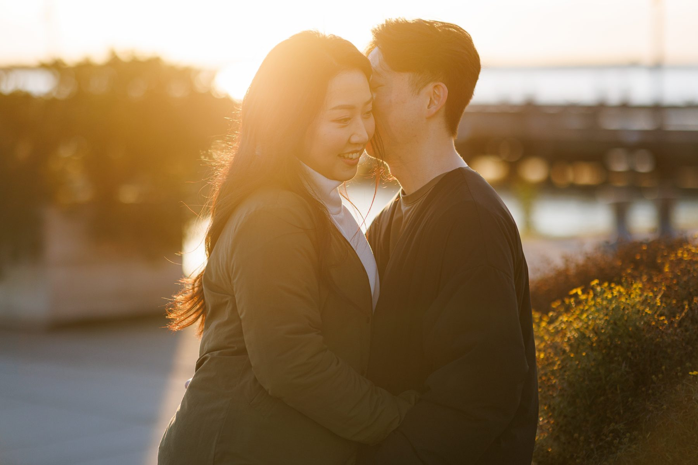
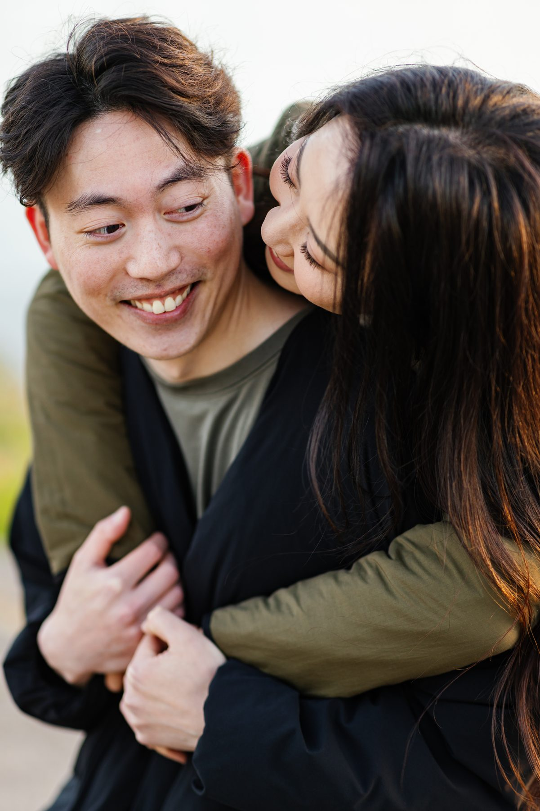
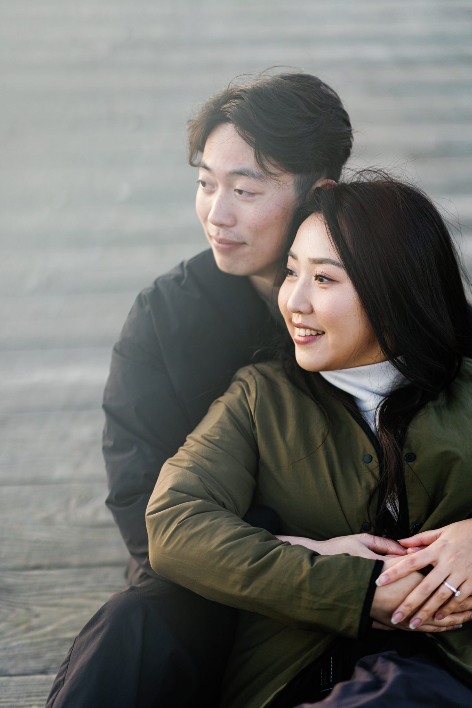

Lucinda and Jonathan did their engagement session late in the fall, on a working waterfront. Fishing boats tied up at the dock. A village street with the maples gone full orange. Then a pier and a sunset.
No gown. No suit. Jackets, sneakers and a white turtleneck. It is one of my favourite sessions of the year, and most couples would have talked themselves out of booking it.
Everyone wants summer. Long evenings, warm air, bare shoulders. I get it.
Here is the contrarian take. Late fall is better for photos. The sun sits low all afternoon, so the flattering light that lasts twenty minutes in July hangs around for a couple of hours. Golden hour also lands before dinner, not at nine at night. You shoot, you eat, you are home early.
And the trees do your styling for you. You could not buy a backdrop that colour.
We started on the dock. Lucinda and Jonathan walked toward me holding hands, with the fishing fleet behind them. That was the whole instruction. Walk. Talk to each other. Ignore me.

Walking is the most useful thing I can give a couple who feels stiff. Your hands have a job. Your feet have a job. Somebody says something dumb and you both laugh. That laugh is the photo. If you are sure you are not photo people, read how we work with camera shy couples. This is most of the trick.
A working dock also beats a manicured park. Masts, ropes, yellow paint lines, weathered planks. It has texture, and it does not look like everyone else's engagement photos.
Look at what they wore. An olive jacket over a white turtleneck and a long dark skirt for her. A dark jacket over a green tee for him. Sneakers on both of them.
It works because it is what they would wear on a cold Saturday anyway. Nobody is shivering in a sundress, pretending it is August. Cold people look cold, and no amount of editing fixes that.
The colours are quiet too. Olive, cream, navy. Against orange leaves and a pink sky, quiet clothes let the season be the loud one. There is more on that in engagement outfits that still look good in five years.
You do not need a forest. You need one tree at the right moment.
We found a few maples at peak colour, a short walk from the water. I shot up through the low branches so the leaves blur into a frame of gold around the two of them, with the sun breaking through behind.

Timing is the only hard part. Fall colour comes and goes fast around Vancouver, and one windstorm can strip a street bare overnight. If the leaves matter to you, keep your date flexible by a week either way and let your photographer make the call.
The last stretch was the best. We walked down to the water as the sun dropped, and everything turned amber.

This is the frame I would print. Her hand on his cheek, foreheads together, the light pouring in from behind. Nobody posed that. I asked them to stand close and wait, and then I kept quiet.

I always pull back for a wide one too. Two small figures, a pier, a big soft sky. Close portraits show your faces. Wide ones show where you were. You want both in the gallery.

Shooting into a low sun is messy. You get flare, haze and a little blur at the edges. Good. That mess is what makes a photo feel like a memory and not a catalogue page.
Most couples think the session ends at sunset. It does not. The twenty minutes after are soft, cool and even. Skin looks great. Nobody squints.

By then Lucinda and Jonathan had forgotten about the camera. She wrapped her arms around him from behind and he cracked up. Then they sat down on the pier and watched the water for a while.

Those are the loosest frames of the day, and they came last. They always do. The first twenty minutes of any session are a warm up, so book enough time to get past them.
Pick a place with some grit over a place that is only pretty. Wear what you would wear anyway, in quiet colours. Start about ninety minutes before sunset and stay past it. And do not write off late fall because the forecast makes you nervous. A grey day is fine. A cold day is fine. Bring a warm coat for between frames.
Still choosing a spot? Here are the engagement photo locations I like around Vancouver.
SimplyWed Studio is a Vancouver wedding and engagement photography studio. Send us your date range through the contact page and we will watch the leaves and the forecast for you.
← Back to the journal